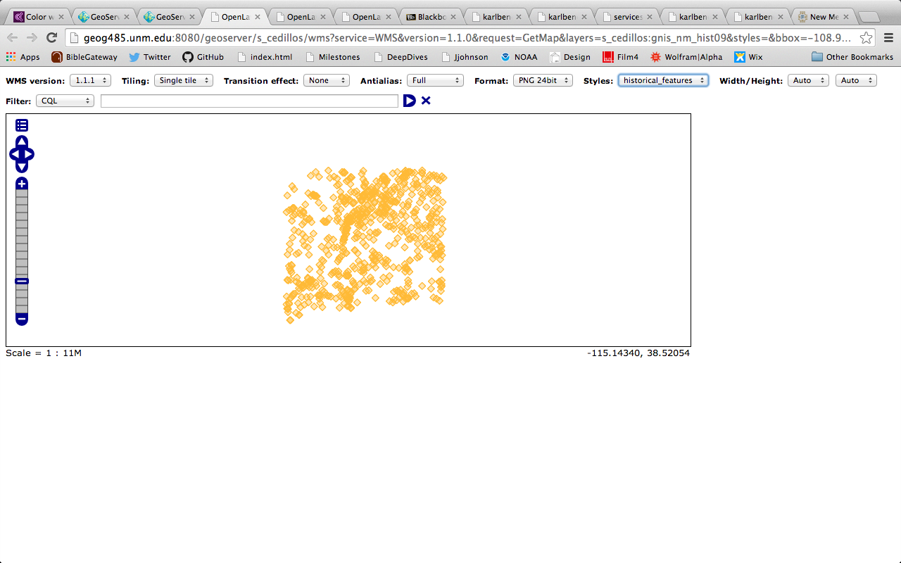
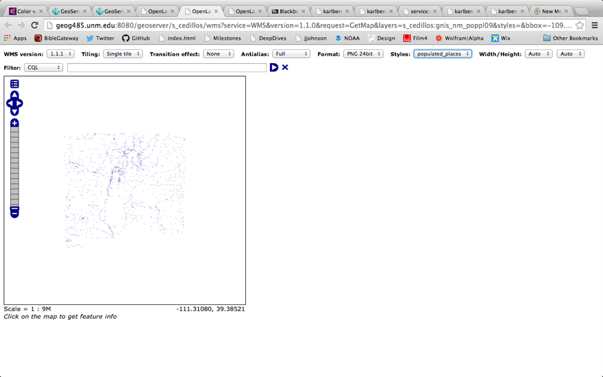
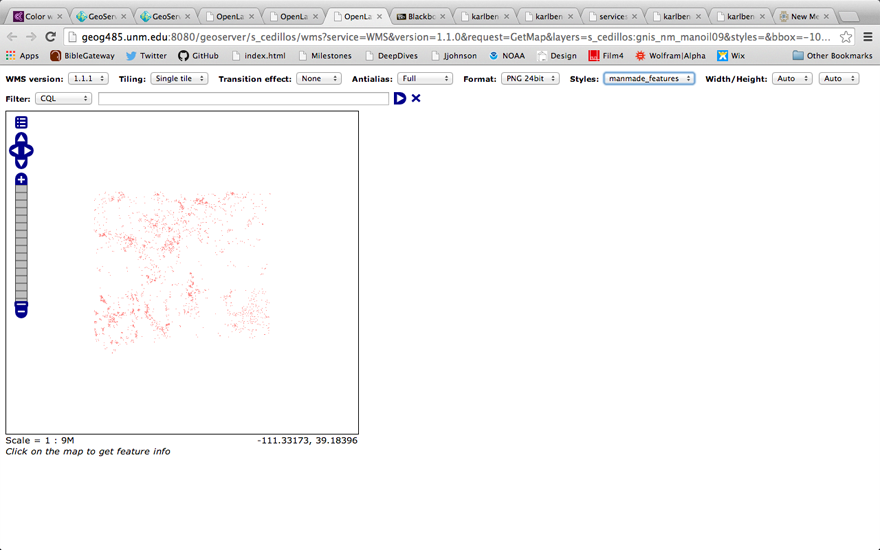

Elisa Cedillos
April 23 2014
Deep Dive 4
Add each of the datasets that you acquired for Deep Dive 3 to GeoServer and style at least three of the layers with a custom style designed to best display the data for your envisioned map.
Include in your writeup the names of the datasets, associated styles, and screenshots of the layers in the OpenLayers previewer, with the style name displayed in the OpenLayers preview tool set.
Layer: gnis_nm_hist09
- Style: historical_features
- 
Layer: gnis_nm_poppl09
- Style: populated_places
- 
Layer: gnis_nm_manoil09
- Style: manmade_features
